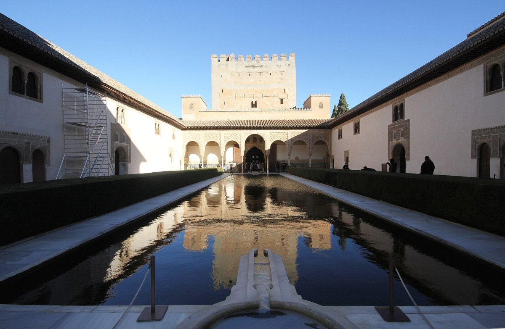
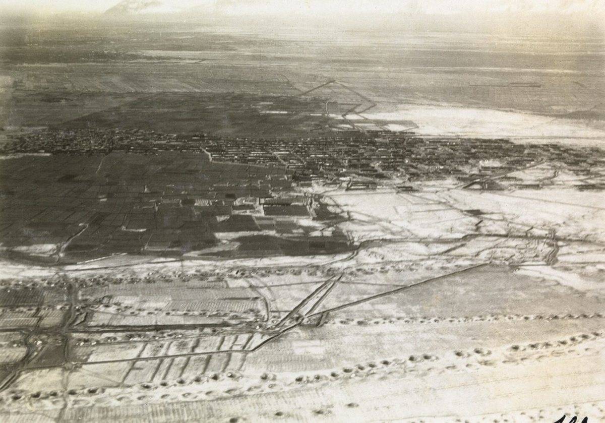
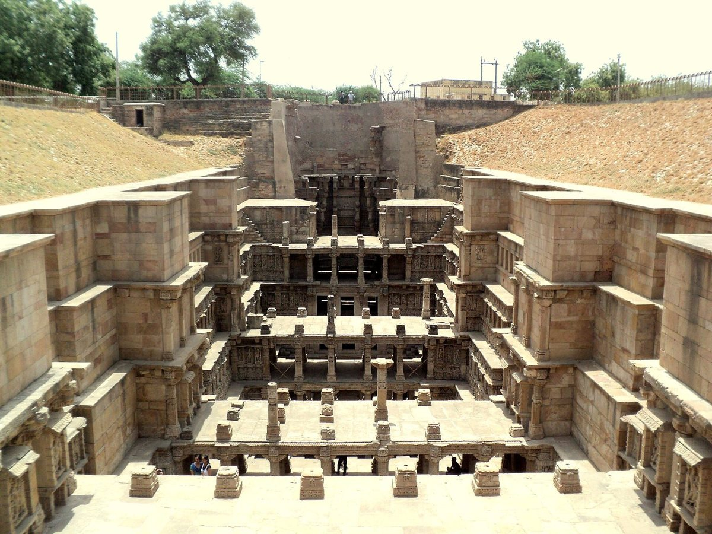
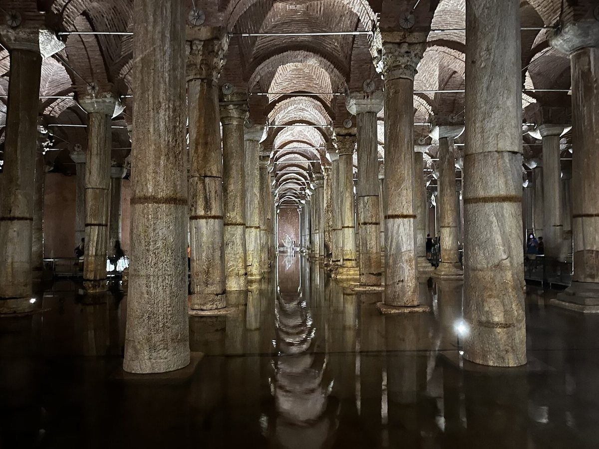
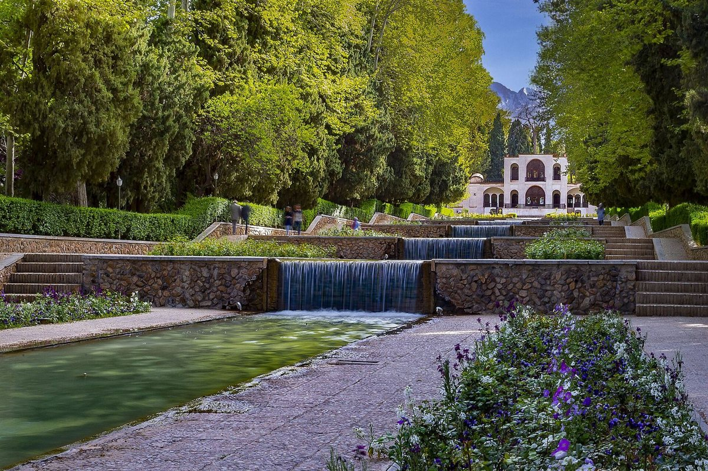
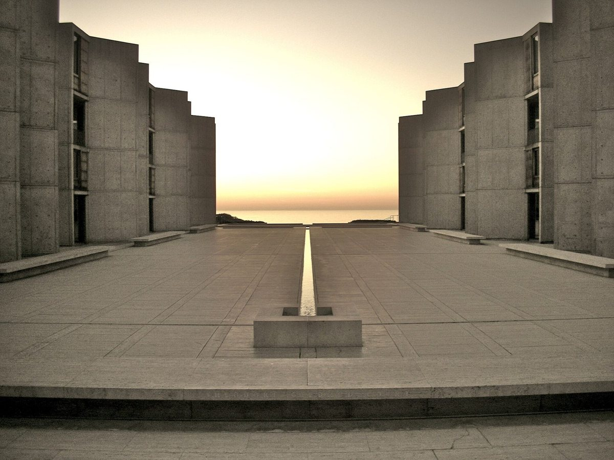
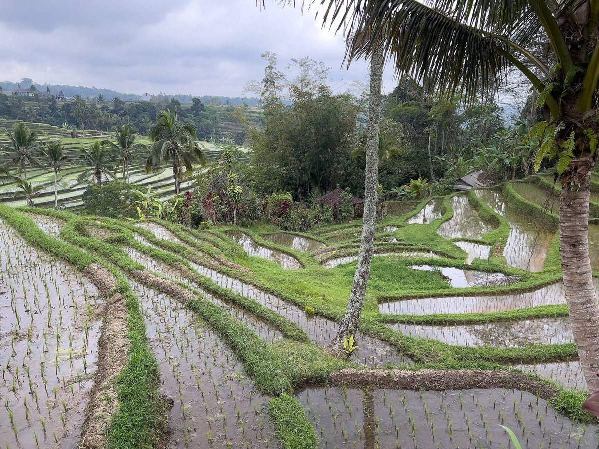
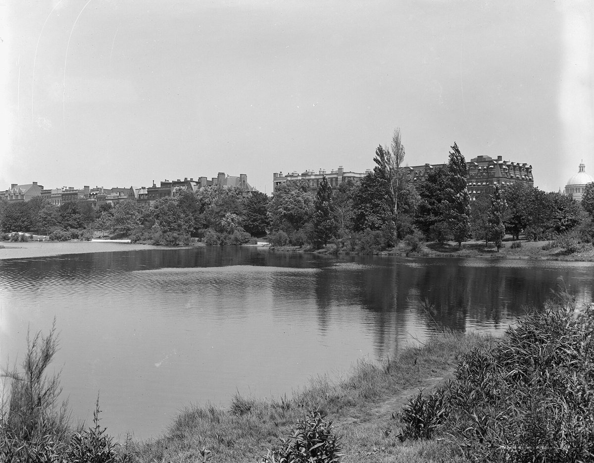

4.1 How water cools Evaporating water takes heat from the air, and it works best where the air is dry 4.1a How far water can cool air
It's an afternoon at the end of September in Granada, in southern Spain, and the sun on the hill of the Alhambra is still hard. Step out of it into the Court of the Myrtles. A long, still pool fills the middle of the court, with hedges along its sides and the tower of the Comares palace reflected at its end. Go through the portico into the halls behind it, and the air is noticeably cooler, and a little damp.
In the autumn of 1997, a researcher measured it. The halls around that court were five to six degrees cooler than the air outside, and the Hall of the Two Sisters, off the Court of the Lions, eight to eleven degrees cooler. The court itself was about three degrees cooler at the hottest time of day, and in the afternoon the air inside was more humid than outside, the signature of water evaporating. This lesson is about that effect: how evaporating water takes heat from the air, why it works so well in dry places and so poorly in humid ones, and how to use it.
How it works
When water evaporates, each molecule that escapes into the air carries heat away with it. It takes a lot: about two and a half million joules for every kilogram of water. Evaporate one litre of water in an hour and you've turned about seven hundred watts of the air's warmth into water vapour, like a small electric heater running backwards, which is why the air comes out cooler and damper. That's why you feel cold stepping out of a swimming pool on a breezy day, and why a clay water jar sweating in the shade keeps its water cool.
How much evaporation can do depends on how dry the air is. Air can hold only so much water vapour, and the drier it is, the more it will take up, and the more it can be cooled. The limit has a name: the wet-bulb temperature. It's the lowest temperature you can reach by evaporating water into the air, and you can read it from a thermometer with a wet cloth around its bulb, in a breeze. The gap between the ordinary air temperature and the wet-bulb temperature is the cooling on offer.
In a desert that gap is huge. Computed for this lesson: air at forty degrees and ten per cent humidity has a wet-bulb temperature below nineteen, so there are more than twenty degrees of cooling available. A good evaporative cooler, which gets about eighty-five per cent of the way there, will deliver air at about twenty-two degrees. But air at thirty-five degrees and sixty per cent humidity, a humid summer day, has a wet-bulb of about twenty-eight. The same cooler can only bring it down to about twenty-nine, and the air it delivers is almost saturated, sticky and uncomfortable.
The US Department of Energy's building researchers give a real pair. In Phoenix, in the Arizona desert, a design day of forty-two degrees with a wet-bulb of about twenty-one offers twenty-one degrees of cooling; a modern cooler delivering twenty-three degrees is eighty-nine per cent effective. In Sarasota, in humid Florida, the gap is only about seven degrees, and they say plainly that evaporative cooling would not work very well. Their guidance is that it works best where the design wet-bulb temperature is below about twenty-one degrees.
Evaporation also adds water to the air. The cooled air is damper, so it has to keep moving through the building and out again, or the humidity builds up and the cooling stops.
And water does one more thing: it stores heat. A pool takes a long time to warm up, so early in the day it's a source of coolness. But after a long afternoon in the sun, the water itself is warm.
The best examples

.JPG){kind=link}
The Alhambra, in Granada, is inscribed on the World Heritage List partly for its intelligent use of water and plants. Water came down to it along a royal canal and runs through its courts in pools, channels and jets. The measurements from 1997 are the best record we have of how much those courts, with their porticoes and thick walls, cooled the halls behind them.
In the old houses of Yazd, Kashan and Isfahan, in Iran, the courtyard is set below the level of the street, with a pool in it. A survey of seven such houses found rooms dug six to seven metres below the ground, pools taking up between four and twenty per cent of the courtyard's area, and in five of them a wind catcher or a solar chimney to move air across the water and through the rooms.
On the coast of the Red Sea, in old Jeddah, houses have the mashrabiya, a projecting bay screened with turned wooden lattice. Its name probably comes from the Arabic word for a place to drink, and some were built to hold porous water jars, which cooled the air passing over them. In one Jeddah house, researchers measured two identical rooms, one above the other, through a hot August: with the lattice open by day, the room was up to about two and a half degrees cooler than the one with it closed. In another experiment in the city, a wet cloth hung in the air stream behind a lattice brought the air in the room to about thirty-four degrees, with nearly forty-two outside: about two degrees better than with the lattice shut, and still too hot at midday.
Water in the open cools too, but only close by. By a four-hectare pond in Tel Aviv, the air downwind was up to one and a half degrees cooler at midday, and the effect reached only about forty metres. By late afternoon, as the water warmed, the effect reversed. Across twenty-seven studies of water in cities, places by the water were on average about two and a half degrees cooler than places away from it in the warm months, counting measurements from the ground and from satellites. Misting nozzles tested in Rome and Ancona, in Italy, cooled the air by as much as eight degrees, but only close to the nozzles, while in an open park in Kobe, in Japan, mist gave only half a degree to a degree within a couple of metres.
Rules of thumb
One. Check the wet-bulb temperature first. Simple evaporation can only cool air toward it, and it works best where the wet-bulb on a hot day is below about twenty-one degrees.
Two. Put the water where the air comes in: a pool, fountain or wet screen in a shaded court, on the side the breeze comes from, so the cooled air flows through the rooms.
Three. Shade the water. Sunlit water warms, and warm water stops cooling.
Four. Keep it close to people. The cooling from a pool or a mist reaches metres, not blocks.
Five. Let the damp air out. Evaporative cooling needs air moving through the building and away, or the humidity rises and the cooling stops.
Where it fails
In humid climates evaporation has little room to work, and it adds humidity to air that's already damp. Water warmed by the sun warms the air instead of cooling it. And a court with no water, no shade and no breeze can be warmer than the street: in a recent study of houses at Luxor and Aswan, one courtyard measured slightly warmer than outside in extreme heat. Be careful with the legends, too. The Mughal gardens of India, with their channels and fountains, are celebrated as cooling devices, but none, as far as the research edition could find, has been measured as one.
Recap
To sum up. Evaporating water carries away a great deal of heat, about seven hundred watts for a litre an hour. It can cool air only toward the wet-bulb temperature, so it's powerful in dry climates and weak in humid ones. Put water in shade, where the breeze comes in and people sit, keep the air moving so the damp can escape, and remember that the cooling is local and that sunlit water warms.
Check yourself
First question. Why does evaporative cooling work so much better in Phoenix than in humid Florida?
Because in dry air the gap between the air temperature and the wet-bulb temperature is large, so evaporation can cool it by many degrees. In humid air the gap is small.
Second question. What is the wet-bulb temperature?
The lowest temperature you can reach by evaporating water into the air.
Third question. Why did the pond in Tel Aviv stop cooling the air by late afternoon?
Because the water had warmed in the sun through the day. Water stores heat as well as evaporating it.
Sources and further reading
- Evaporation and the wet-bulb temperature: FAO Irrigation and Drainage Paper 56; CIBSE Journal CPD (November 2018); US National Weather Service, glossary. Worked values computed for this lesson with standard psychrometric formulas.
- Evaporative coolers: Pacific Northwest National Laboratory for the US Department of Energy, Building America Solution Center, Evaporative cooling systems; US Department of Energy, Energy Saver, Evaporative coolers; Australian Government, Your Home, Passive cooling.
- The Alhambra: UNESCO World Heritage List, 314; Patronato de la Alhambra y Generalife; B. Jiménez Alcalá (1999), on the natural cooling of the Nasrid palaces; research edition, chapter 2 (C2.2).
- The Iranian courtyard house: P. Izadpanahi and colleagues (2021); UNESCO World Heritage List, 1544, Historic City of Yazd; research edition, chapter 2 (C2.3).
- The mashrabiya: A. A. Bagasi, J. K. Calautit and A. S. Karban, Energies 14 (2021); a wet-screen experiment in Jeddah, Energy and Buildings (2020); research edition, chapter 2 (C2.4).
- Water in the city: H. Saaroni and B. Ziv, International Journal of Biometeorology (2003); S. Völker and colleagues, Erdkunde (2013); G. Ulpiani and colleagues, Building and Environment (2019); a misting study in Kobe, Atmosphere (2023); a study of courtyards at Luxor and Aswan, Buildings (2025).
- The Mughal gardens: research edition, chapter 2 (C2.12).
- Further reading: B. Givoni, Passive and Low Energy Cooling of Buildings (1994).
4.2 Water brought and kept The qanat, the stepwell and the cistern 4.2a The qanat4.2b The stepwell
It's midday in May at Patan, in Gujarat, in western India, at the hottest time of the year. The ground is dazzling. Walk to the edge of a great rectangular trench cut into the earth, and a stone stairway leads you down, level after level, through galleries and pavilions carved with hundreds of figures of gods, goddesses and celestial dancers. Seven levels down, twenty-three metres below the ground, is the tank where the water once stood, and beyond it the round shaft of the well, thirty metres deep. The light is soft, the stone is cool, and the air at the bottom is several degrees cooler than the air above.
This is Rani-ki-Vav, the Queen's Stepwell, built in the eleventh century. It's a well, a temple and a public room all at once. Where rain falls only in one season and rivers are few, water has to be found, brought, stored and shared, and people have built some of their most remarkable structures to do it. This lesson is about three of them: the qanat, which brings water from under the hills by gravity alone, the stepwell, which takes you down to it, and the cistern, which keeps it.
How it works
Start with the qanat. At the foot of a range of hills, water soaks into the gravel and collects underground, in an aquifer. The builders dig a mother well down to it, sometimes very deep. Then, starting from the plain miles away, they dig a tunnel back toward the mother well, sloping gently up, so that when the two meet, water flows down the tunnel by gravity and comes out at the surface where people need it. Along the way, vertical shafts are dug every so often, to take out the spoil, let in air, and give access for cleaning. From above, a qanat looks like a line of craters running across the desert. The slope is tiny, a few millimetres per metre at most, just enough to keep the water moving without scouring the tunnel.
A qanat can run for tens of kilometres, and because the water travels underground, little is lost to evaporation on the way. It needs no pump and no fuel, and a good one flows for centuries.
The stepwell solves a different problem. In western India the water table rises in the monsoon and sinks in the dry season. A stepwell is dug down to it and lined in stone, with a flight of steps and landings that let people reach the water whatever its level, and galleries that shade the way down. It's a well you can walk into. Because it's deep, shaded and full of cool stone and water, it's also a cool place to be.
The cistern keeps water that has been gathered, from a roof, a courtyard or a qanat. The best cisterns are underground or in deep shade, so the water stays dark and cool and doesn't grow algae or evaporate. In Iran, the traditional cistern, the ab anbar, is dug as much as ten metres into the ground under a dome, and it usually holds three hundred to three thousand cubic metres, with wind catchers on top to keep air moving over the water.
The best examples

Iran's qanats are on the World Heritage List, eleven of them chosen from more than thirty-seven thousand in the country. The Qasabeh qanat at Gonabad, in the north-east, is thought to be more than two thousand years old. It runs for more than thirteen kilometres, with two hundred and twenty-two shafts, from a mother well two hundred metres deep. The Zarch qanat, at Yazd, runs about eighty kilometres. In Oman, where the qanat is one of three kinds of falaj, about three thousand aflaj are still in use, and each farmer's share of the water is timed, by tradition, with a sundial.
In the Algerian Sahara, the same idea is called a foggara. At the tunnel's mouth, the water flows into a basin with a stone comb across it, a row of openings of fixed sizes, each one feeding a different owner's channel. The comb divides the water fairly by geometry, and the shares are written in a register. About nine hundred foggaras were still working in 2001.
Rani-ki-Vav, at Patan, from the opening, was built in the eleventh century as a memorial to a king. Its World Heritage listing describes it as an inverted temple that honours the sanctity of water. It has more than five hundred major sculptures and a thousand smaller ones. When researchers took the temperature inside seventeen stepwells, most of them in Gujarat, at midday once a week from April to June, most were three to seven degrees cooler than the air outside, and Rani-ki-Vav four to six.

.JPG){kind=link}

.jpg){kind=link}
And the grandest cistern is in Istanbul. The Basilica Cistern, built in the sixth century under the emperor Justinian, is a forest of three hundred and thirty-six columns under brick vaults, about a hundred and thirty-eight metres long, and held around eighty thousand cubic metres of water for the city.
Rules of thumb
One. Let gravity do the work. Bring water downhill wherever you can, with a gentle, steady slope, and avoid pumping it.
Two. Keep water underground or in shade, on its way and in storage. That keeps it cool, clean and from evaporating.
Three. Make the water reachable at every level. Water tables and tanks rise and fall with the seasons, so give people steps and landings, not just a single edge.
Four. Share it by a rule people can see. The foggara's comb and the falaj's sundial divide water fairly in plain view.
Five. Plan for upkeep. Tunnels silt up and walls crack, and a water system lasts only as long as someone cleans and mends it.
Where it fails
These systems depend on the water underground and on the people who keep them. When modern wells lower the water table, or no one is left to clean the tunnels, they dry up: the foggaras of the Algerian Sahara fell from about nine hundred and seven working in 2001 to about eight hundred and eighty by 2012. Stored water spoils if it isn't kept dark, covered and clean. And be modest about the numbers. The stepwell temperatures were read with a single thermometer at midday, once a week; the water in Iran's cisterns has been modelled but, as far as the research edition could find, never measured.
Recap
To sum up. Where water is scarce and seasonal, it has to be brought, kept and shared. The qanat brings groundwater from under the hills by gravity, through a gently sloping tunnel with shafts for digging and air. The stepwell takes people down to the water whatever its level, and makes a cool public room of the descent. The cistern stores water underground or in shade, dark and cool. Use gravity, keep water in shade, share it by visible rules, and plan for upkeep.
Check yourself
First question. How does a qanat move water without a pump?
Through a gently sloping tunnel dug back from the plain to an aquifer under the hills. The water flows down it by gravity, and shafts along the way let the diggers remove spoil and let in air.
Second question. Why are the best cisterns underground or in deep shade?
So the water stays dark and cool, doesn't grow algae, and doesn't evaporate.
Third question. How did the foggaras of the Sahara divide water fairly among their owners?
With a stone comb at the tunnel's mouth: a row of openings of fixed sizes, each feeding one owner's channel, with the shares written in a register.
Sources and further reading
- The qanat: UNESCO World Heritage List, 1506, The Persian Qanat, and its ICOMOS evaluation; Encyclopaedia Britannica, Qanat; research edition, chapter 1 (C1.12).
- The falaj: UNESCO World Heritage List, 1207, Aflaj Irrigation Systems of Oman.
- The foggara: B. Remini, B. Achour and J. Albergel, Applied Water Science (2015); research edition, chapter 2 (C2.23).
- The ab anbar: Encyclopaedia Iranica, Ab-anbar; research edition, chapter 2 (C2.3).
- Rani-ki-Vav: UNESCO World Heritage List, 922; Gujarat Tourism; S. P. Parmar and D. P. Mishra, Frontiers of Architectural Research (2024); research edition, chapter 2 (C2.11).
- The Basilica Cistern: Encyclopaedia Britannica, Basilica Cistern; Wikipedia, Basilica Cistern.
- Further reading: M. Jain-Neubauer, The Stepwells of Gujarat (1981).
4.3 The garden of water The fourfold garden, the court pool and reflecting water 4.3a A reflecting pool
It's a summer afternoon at Tivoli, on the hills east of Rome, and you're standing on the terrace of the Villa d'Este. Below you the garden falls away down the hillside in steps, and everywhere there is the sound of water: jets, cascades, basins, grottoes, a long wall of small fountains side by side. Some fifty fountains in all, and not one pump. Every jet runs on the fall of the ground, from a canal cut under the town in the 1560s to bring in water from the river Aniene. Wait long enough and you'll hear the water organ, a fountain that plays music on the water's pressure, which still plays every two hours.
Gardens of water are among the oldest designed landscapes there are. They put water to many uses at once: to grow plants in dry places, to cool the air, to make sound, to catch the light and double the buildings in reflection, and to stand for paradise. This lesson is about how they're made: the fourfold garden divided by channels, the still pool in a court, the fall of water down a slope, and the geometry of a good reflection.
How it works
Every garden of water starts with a source and a fall. Water arrives at the top, from a spring, a river, a canal or a qanat, and gravity carries it down through the garden. The steeper the fall, the more it can do: at Tivoli, a hillside is enough to throw jets high into the air. On flatter ground, water moves slowly along gently sloping channels, and the drama comes from stillness instead.
The classic plan is the fourfold garden, called the charbagh, from the Persian words for four and garden. Two water channels cross at right angles and divide the ground into four quarters, with a pool or pavilion where they meet. The channels water the beds as they go, and they draw the plan of the garden in water. The World Heritage listing of the Persian Garden describes it as always divided in four, with water used both to irrigate and to delight.
Water also makes light. A still pool is a mirror, and a mirror doubles whatever stands beyond it. That has a geometry, computed for this lesson, and it surprises people. The reflection of the top of a building appears on the water at a point that sits a small fraction of the way from you to the building: your eye height divided by your eye height plus the building's height. For a building twenty metres tall, a hundred metres away, the reflection of its top sits only about seven metres in front of your eyes. So a reflecting pool that shows a whole building has to come close to the viewer. A pool that begins thirty metres in front of where people stand shows only the bottom few metres of the façade.
Still water mirrors; moving water glitters and sounds. A good garden decides which each pool is for. And all of it depends on water that can be spared: in a hot, dry climate, open water evaporates fast, and a garden of water is a promise to keep supplying it.
The best examples
The oldest Persian garden that archaeologists can trace is at Pasargadae, in Iran, built for Cyrus the Great in the sixth century before the common era. Stone channels there framed plots of about seventy by fifty metres in front of a palace, viewed from a throne under a portico. It has long been read as the first fourfold garden. A newer survey found a much larger grid of squares and a pond about two hundred and fifty metres long, which the four-part diagram doesn't describe. Either way, it was a garden made visible by water.

{kind=link}
Pasargadae and eight later Persian gardens are on the World Heritage List together. At the Shazdeh garden, near Mahan, a qanat enters at the top of a slope and falls down stepped terraces in small cascades, watering the garden as it goes.
{kind=link}
In India, the Mughal emperors built the charbagh at the scale of a landscape. At the Taj Mahal, finished in 1653, the garden covers nearly seventeen hectares, divided into four and then into sixteen, with a raised central pool and fountains fed from the river Yamuna by an aqueduct and clay pipes. Unusually, the tomb stands at the far end of the garden rather than in its centre, so the long approach runs beside a reflecting pool, and the building rises beyond the water.
At Sigiriya, in Sri Lanka, in the late fifth century, King Kassapa built a garden of symmetrical pools and fountains at the foot of his rock fortress, fed through buried terracotta pipes and rock-cut drains. The hydraulics still partly work, and some fountains still rise in the rainy season, fifteen hundred years later.

{kind=link}
And at the Salk Institute in California, finished in 1965, Louis Kahn put a single narrow channel of water down the middle of a bare stone court open to the Pacific. Twice a year, at the equinoxes, the sun sets along the line of the water.
Rules of thumb
One. Start from the source and the fall. Find where water can arrive at the top of the site, and let gravity carry it through the garden.
Two. Draw the plan with water. Channels that water the beds can also set the garden's geometry, as the fourfold garden does.
Three. Decide what each pool is for: still water to mirror, moving water to sparkle and to be heard.
Four. To reflect a building, bring the water close to the viewer. The top of the building reflects at eye height divided by eye height plus building height of the distance, which is often only a few metres away.
Five. Budget the water. Know how much the source can supply, including what the sun will evaporate, before you design the fountains.
Where it fails
Gardens of water fail when the water runs short. At Versailles, the fountains of Louis the Fourteenth needed far more water than the great pumping machine at Marly could lift from the Seine, by one account four times as much, and the display had to be rationed. At Tivoli, the supply is cut off when the river Aniene floods. Still water in the sun grows algae and breeds mosquitoes unless it's kept moving, clean and maintained. And be careful with the stories. The Mughal gardens are celebrated as cooling devices, but none, as far as the research edition could find, has been measured as one, and even the famous Court of the Lions at the Alhambra is disputed. Was it a sunken garden or a paved court? Its custodians note an intense debate, though their own study of the court concluded that it was paved from the start.
Recap
To sum up. A garden of water begins with a source and a fall, and gravity does the work. The fourfold garden divides the ground with channels that water it and draw its plan. Still water mirrors and moving water sparkles and sounds, so decide what each pool is for. A reflection of a whole building needs water that comes close to the viewer. And every garden of water depends on a supply that can be spared, and on care.
Check yourself
First question. What drives the fountains of the Villa d'Este at Tivoli?
Gravity. River water is brought in by a canal to the top of the hillside garden, and it falls through the fountains to the bottom, with no pumps at all.
Second question. What is a charbagh?
A fourfold garden: two water channels crossing at right angles divide it into four quarters, watering the beds and drawing the plan.
Third question. A building is twenty metres tall and a hundred metres away. Roughly where on the water will you see the reflection of its top?
Only about seven metres in front of you. So the pool has to come close to where you stand.
Sources and further reading
- Tivoli: UNESCO World Heritage List, 1025, Villa d'Este, Tivoli, and its ICOMOS evaluation (2001); Italian Ministry of Culture, Villae; research edition, chapter 2 (C2.33).
- The Persian Garden and Shazdeh: UNESCO World Heritage List, 1372, The Persian Garden, and its ICOMOS evaluation.
- Pasargadae: UNESCO World Heritage List, 1106; D. Stronach, Encyclopaedia Iranica, Cahar bag; R. Boucharlat, S. Gondet and colleagues, as reported in The Past; research edition, chapter 1 (C1.11).
- The Taj Mahal: UNESCO World Heritage List, 252; Uttar Pradesh Department of Tourism, tajmahal.gov.in; research edition, chapter 2 (C2.12).
- Sigiriya: UNESCO World Heritage List, 202; Central Cultural Fund of Sri Lanka; research edition, chapter 1 (C1.20).
- The Salk Institute: Salk Institute, virtual architecture tour.
- Reflections: computed for this lesson from the law of reflection, for an eye 1.6 metres above the water.
- Versailles and the Alhambra: research edition, chapter 2 (C2.33 and C2.2); Patronato de la Alhambra y Generalife, The Court of the Lions, and Descifrando el Patio de los Leones: Pavimentación.
- Further reading: J. L. Wescoat and J. Wolschke-Bulmahn, editors, Mughal Gardens (1996); E. B. MacDougall, Fountains, Statues and Flowers (1994).
4.4 Rain The roof as catchment, and the atrium around its pool 4.4a Rain
It's a winter storm in Pompeii, two thousand years ago. Rain drums on the tiled roofs of a town house, and all of it runs inward. The roofs around the central hall, the atrium, slope toward a square opening in the middle, and the water pours off their edges in a curtain into a shallow pool set in the floor below. From the pool it drains into a cistern under the floor, and later someone draws it up through a stone well-head, clean and cool. When the cistern is full, the overflow runs out to the street.
That house was a machine for catching rain, and it was also the most beautiful room in the house, lit from above, with a pool of water at its heart. This lesson is about rain as a resource and as a force: how much a roof can collect, how to keep that water clean, how big a tank should be, and how to design a building so rain runs off it without harming it.
How it works
Start with one piece of arithmetic that makes everything else easy. One millimetre of rain falling on one square metre of roof is one litre of water. So a roof of a hundred and fifty square metres, measured in plan, in a place that gets six hundred millimetres of rain a year, receives ninety thousand litres a year. You won't collect it all. Some splashes off, some evaporates, some overflows in a downpour, and some should be thrown away on purpose. Texas's manual on rainwater harvesting puts the share you can actually collect at seventy-five to ninety per cent: here, sixty-seven and a half to eighty-one thousand litres.
The water you throw away on purpose is the first flush. The first rain after a dry spell washes dust, leaves and bird droppings off the roof, so a simple device diverts the first part of each storm before the rest flows to the tank. How much to divert is not agreed. The Australian government's guidance says about a fifth of a litre for each square metre of roof, Texas's manual says at least twice that, and other rules go up to two litres, a tenfold spread. The roof matters too: the Texas manual warns that asphalt shingle roofs are unfit for collecting drinking water.
How big should the tank be? It depends on the job. One British rule sizes the tank at about five per cent of what the roof collects in a year, about eighteen days' worth, as a buffer between storms: for our roof, a tank of about three and a half to four thousand litres, a cube about one and a half metres on a side. Texas's manual sizes it to carry you through the longest dry spell, or about a quarter of a year's demand. If this household used seventy-six thousand litres a year, that's about nineteen thousand litres, a cube more than two and a half metres on a side. One is a buffer; the other is a reservoir for the dry season.
Rain is also a force to keep off the walls. A building scientist's review of rain on buildings finds that overhangs and pitched roofs cut the rain reaching the walls by about half, and a survey of forty-six buildings in British Columbia found that the wider the overhangs, the fewer the walls with water problems. A drip, a groove under a sill or an edge on the metal, makes water fall free instead of creeping back along the underside and into the wall. Cladding should stop at least two hundred millimetres above the ground, clear of splash. And gutters are sized for the downpour, not the average. Britain's national annex to the European standard sizes eaves gutters for the heaviest two minutes of rain you'd expect once a year, which in London is about seventy-nine millimetres an hour. Philadelphia's code uses the heaviest hour expected in a century, about a hundred and fourteen.
The best examples
.jpg){kind=link}
The Roman atrium house is the classic. Vitruvius describes several kinds, and advises making the roof opening a quarter to a third of the atrium's width. He warns that roofs sloping outward, away from the opening, carry their water into pipes along the walls that overflow and damage them. At Pompeii, the House of the Faun, from the second century before the common era, covers about three thousand square metres, with two atria. A bronze dancing faun, the statue that gives the house its name, stood in the pool of the main one; a copy stands there now.
The Maya city of Tikal, in the rainforest of Guatemala, had no river, so its plazas and paved courts were its catchments, draining to reservoirs. One of them, the Corriental reservoir, held about fifty-eight million litres, and archaeologists found that its water had been filtered through a bed of zeolite and quartz sand brought from about thirty kilometres away. The filter was in use for more than a thousand years. In two other reservoirs at the heart of the city, the sediments held mercury and signs of toxic algae; the filtered Corriental was cleaner.

{kind=link}
In Bali, rain and rivers feed the subak, the cooperative system that shares water among terraced rice fields. It goes back at least a thousand years, and it was inscribed on the World Heritage List in 2012. About twelve hundred subak groups, each of fifty to four hundred farmers, share water that passes through a network of water temples on its way to the fields.
Rules of thumb
One. Count the rain: one millimetre on one square metre is one litre, and a good system collects seventy-five to ninety per cent of it.
Two. Divert the first flush, from a fifth of a litre to two litres per square metre of roof depending on the authority, and keep the roof clean. Don't collect drinking water from asphalt shingles.
Three. Size the tank for its job: about eighteen days' worth as a buffer between storms, or a quarter of a year's demand to carry you through a dry season.
Four. Throw rain clear of the walls: overhangs, drips under sills and copings, and cladding stopped about two hundred millimetres above the ground.
Five. Size gutters and pipes for the downpour, not the average. Use the local design storm.
Where it fails
Stored rainwater is only as clean as the roof, the tank and the care. At Tikal, the reservoirs at the city's centre were contaminated while the filtered one stayed clean. Open water breeds mosquitoes, and tanks that are never cleaned grow slime and worse. Water that isn't led away does damage: overflowing gutters, splash and roofs that shed water onto walls are common causes of damp in buildings, as Vitruvius already knew. And systems of shared water can be broken from outside. When the Green Revolution of the 1970s told Balinese farmers to plant as often as they could, instead of on the temples' schedule, the coordinated fallow that kept pests down was lost, and, according to the anthropologist Stephen Lansing, crop losses to pests approached a hundred per cent in places. Other scholars dispute how much the temples controlled.
Recap
To sum up. One millimetre of rain on a square metre of roof is a litre, and a roof can collect three-quarters or more of what falls on it. Divert the first flush and keep the roof clean. Size the tank as a buffer or as a reservoir for the dry season, depending on the job. Throw rain clear of the walls with overhangs, drips and a raised base, and size gutters for the downpour. The Roman atrium, the reservoirs of Tikal and the Balinese subak all show rain gathered, stored and shared by design.
Check yourself
First question. How much water does one millimetre of rain on one square metre of roof give?
One litre.
Second question. Why is the first flush of a storm diverted away from the tank?
Because it washes the dust, leaves and droppings off the roof. Diverting it keeps the stored water cleaner.
Third question. How do overhangs help a building in the rain?
They keep rain off the walls, cutting the water that reaches them by about half, so the walls stay drier and last longer.
Sources and further reading
- Collecting rain: Texas Water Development Board, The Texas Manual on Rainwater Harvesting, third edition; Australian Government, Your Home, Rainwater; Environment Agency, Harvesting rainwater for domestic uses (2010). Worked example computed for this lesson.
- Rain on walls: J. Straube, Building Science Digest 013, Rain control in buildings (2011); Canada Mortgage and Housing Corporation, survey of building envelope failures in British Columbia (1996).
- Gutters: HR Wallingford, report SR 620, on BS EN 12056-3; the Philadelphia plumbing code.
- The atrium house: Vitruvius, On Architecture, book VI, chapter 3; Pompeii Archaeological Park, House of the Faun; National Archaeological Museum of Naples, the Dancing Faun; research edition, chapter 1 (C1.14).
- Tikal: K. B. Tankersley and colleagues, Scientific Reports (2020); D. L. Lentz and colleagues, Scientific Reports (2020); research edition, chapter 1 (C1.29).
- The subak: UNESCO World Heritage List, 1194, Cultural Landscape of Bali Province; J. S. Lansing and T. A. de Vet (2012); research edition, chapter 2 (C2.14).
- Further reading: J. S. Lansing, Priests and Programmers (1991).
4.5 Water in the landscape Swales, rain gardens and the park as a sponge 4.5a A rain garden and a swale4.5b Raised fields of Lake Titicaca
It's a January storm in Davis, in California's Central Valley. In most American suburbs, the rain runs off the roofs, down the driveways and along the gutter into a drain, and it's gone, carrying whatever it picked up on the way. In Village Homes, a neighbourhood built here from the mid-1970s, the rain goes somewhere else. It runs off the roofs into shallow, planted channels that wind between the houses, landscaped like seasonal streams. There the water slows down, spreads out and soaks into the ground. In heavier rain, some of it still reaches the city's drains.
The neighbourhood was designed by Michael and Judy Corbett, and by one account the swales saved about eight hundred dollars a house compared with storm drains, money that went into landscaping instead. This lesson is about treating rain as something to keep in the landscape instead of something to get rid of: swales, rain gardens, parks that flood on purpose, and the ancient farmers who built fields out of water.
How it works
When land is covered with roofs and paving, rain can't soak in. It runs off fast, all at once, and floods the drains and streams below, carrying oil, metals, fertiliser and litter with it. The landscape answer is to slow the water down, spread it out and let it soak in close to where it falls.
A rain garden, which engineers call bioretention, is a shallow planted hollow that takes the runoff from nearby roofs and paving. The water pools on the surface, soaks through a specially mixed soil, and either sinks into the ground below or is carried away slowly by a perforated pipe. The rules of thumb come from the US Environmental Protection Agency and state stormwater manuals. An engineered rain garden takes up about five to ten per cent of the paved area that drains to it, and simpler gardens for homeowners are made larger, about twenty to thirty per cent. For two hundred square metres of roof and paving, that's a garden of ten to twenty square metres, or up to sixty. The water pools fifteen to thirty centimetres deep, and it must drain away within a day or two, so the garden is ready for the next storm, and so mosquitoes, which need about a week of standing water, can't breed. Minnesota's manual gives the soil as about two-thirds sand, with topsoil and compost making up the rest.
A swale is a long, shallow, planted channel that carries water slowly instead of piping it. Minnesota's manual asks for a gentle fall along its length of half a per cent to two per cent, side slopes no steeper than one in three, water moving slower than about a metre and a quarter a second in a big storm, and draining within forty-eight hours.
How well do they work? Across the national data the EPA has gathered, rain gardens cut the volume of water running off by more than half where they drain through a pipe, and by about nine-tenths where the water simply soaks into the ground. They trap most of the sediment and the metals. In a field study in Maryland, they cut the concentration of suspended solids in the water by about half, of phosphorus by three-quarters, of lead by four-fifths and of zinc by three-fifths, and removed even more by weight. But they're less reliable with dissolved nutrients: in the EPA's national data, phosphorus often came out more concentrated than it went in, and soil mixes rich in compost can release it.
At the scale of a city, the same idea becomes the park as a sponge: open land designed to flood safely in storms and drain slowly afterwards, so the streets don't.
The best examples

In Boston in the late 1870s, Frederick Law Olmsted designed the Back Bay Fens, a park that was also a flood control works. Tidal gates controlled the exchange with the Charles River, brick conduits carried two streams through, and a basin planted as a salt marsh stored their floodwater until the tide could take it out. It was built by 1895, the first link in the chain of parks now called the Emerald Necklace. It worked as designed for only about fifteen years: in 1910 a new dam on the Charles made the river fresh, the salt marsh died, and the machine became a picture of one.
At the end of 2014, China launched its sponge city programme, and in 2015 it set a national target that seventy per cent of the rain falling on urban land should be absorbed or used on the spot, across a fifth of built-up areas by 2020 and four-fifths by 2030. Thirty pilot cities were funded in 2015 and 2016. When severe floods hit four of the pilot cities in 2020, researchers concluded it was too early to judge.
Farmers in the Americas built with water centuries earlier. In the Basin of Mexico, the chinampas of Xochimilco are long, narrow fields built up out of a lake from layers of mud and plants, held in place by the roots of willows planted along their edges, with canals between them. They still yield several crops a year, and the historic centre of Mexico City and Xochimilco together are a World Heritage site. And on the shores of Lake Titicaca, nearly four thousand metres up in the Andes, ancient farmers built raised fields: long platforms of earth between water-filled canals. Measured in the 1990s, on clear, still nights the air above the platforms stayed about a degree warmer than over flat fields, and in one hard frost, the freezing spell lasted about an hour and a half over the platforms against more than four hours over flat ground. The usual story is that the canals store the day's heat and warm the soil at night. The measurements didn't find heat moving through the soil. Instead, air warmed over the canals drifted across the platforms, and the coldest air drained off them into the canals.
{kind=link}
Rules of thumb
One. Keep rain close to where it falls. Send roofs and paving to planted hollows and channels before any pipe.
Two. Size an engineered rain garden at about five to ten per cent of the paved area draining to it, or more for a simple garden.
Three. Pond it fifteen to thirty centimetres deep, and make sure it drains within forty-eight hours.
Four. Make swales gentle: a fall of half a per cent to two per cent, side slopes no steeper than one in three, and slow-moving water.
Five. Design the overflow. Every garden, swale and park will be overwhelmed by a big enough storm, so give the excess a safe way out.
Where it fails
Rain gardens trap sediment and metals well, but dissolved nutrients less reliably, and a rich soil can leak phosphorus. They clog if they're never maintained, and a big enough storm overwhelms any of them: severe floods hit four of China's pilot cities in 2020. Landscapes built around water depend on the water staying the same: the Fens stopped working when the river changed. And farming with water needs farmers: Xochimilco loses about thirty-one hectares of chinampas a year as farming is abandoned, and a recent study found mercury in eight of the ten plots it sampled.
Recap
To sum up. Where roofs and paving stop rain soaking in, slow the water down, spread it out and let it soak in close to where it falls. Rain gardens take five to ten per cent of the area draining to them, pond fifteen to thirty centimetres deep and drain within two days; swales carry water gently instead of piping it. At the scale of a city, parks can be built to flood. They trap sediment and metals well and dissolved nutrients less well, they need care, and every one of them needs a safe way for the biggest storms to overflow.
Check yourself
First question. How large should an engineered rain garden be, compared with the paved area that drains to it?
About five to ten per cent of it.
Second question. Why must a rain garden drain within about forty-eight hours?
So it's empty and ready for the next storm, and so mosquitoes, which need about a week of standing water, can't breed in it.
Third question. What protected the crops on Titicaca's raised fields from frost, according to the measurements?
Air warmed over the canals drifting across the platforms, and cold air draining off them into the canals, not heat moving through the soil.
Sources and further reading
- Village Homes: B. Browning and K. Hamilton, In Context 35 (1993); research edition, chapter 5 (C5.8).
- Rain gardens and swales: US Environmental Protection Agency, Stormwater best management practice: bioretention (rain gardens) (2021); Minnesota Pollution Control Agency, Minnesota Stormwater Manual; University of Connecticut, NEMO, rain garden sizing; University of Maine Cooperative Extension, bulletin 2702.
- Performance: A. P. Davis, Environmental Engineering Science (2007); research edition, chapter 5 (C5.13).
- The Back Bay Fens: SAH Archipedia, Back Bay Fens; National Park Service, The Emerald Necklace; Emerald Necklace Conservancy; research edition, chapter 3 (C3.32).
- The sponge city: State Council of China, Guideline 75 (2015); two reviews in Water (2018 and 2020).
- Chinampas: UNESCO World Heritage List, 412; Encyclopaedia Britannica, Chinampa; F. Figueroa and colleagues, Sustainability 14 (2022); research edition, chapter 2 (C2.27).
- Raised fields: D. Sánchez de Lozada, P. Baveye and S. Riha, Agricultural and Forest Meteorology (1998); C. Erickson, Expedition (1988); research edition, chapter 2 (C2.29).
- Further reading: M. Corbett, A Better Place to Live (1981); A. W. Spirn, The Granite Garden (1984).